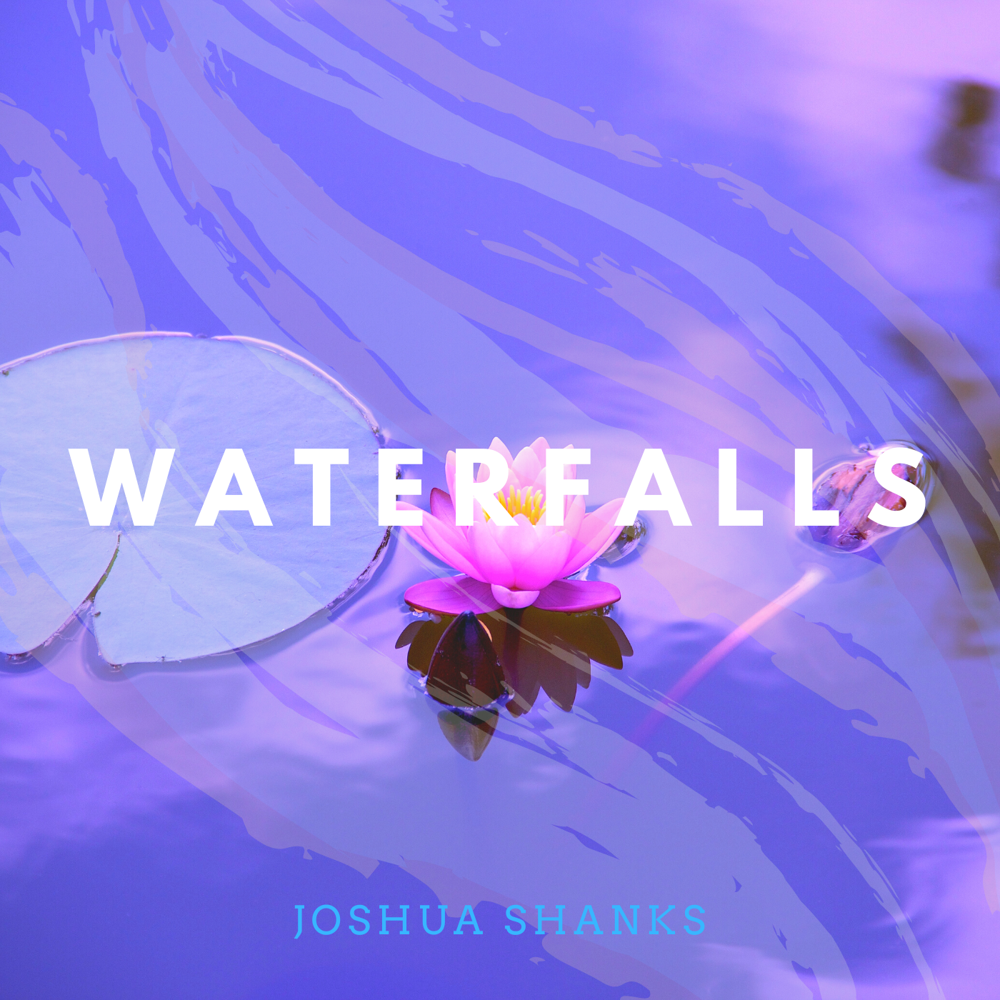

NEWEST RELEASE • AMBIENT
JOSHUA SHANKS
Waterfalls
Ambient • Piano • 8 tracks
CURATED ROYALTY-FREE MUSIC
Distinctive royalty-free music for videos, streams, podcasts, games, films, and the stories you have not made yet.

NEWEST RELEASE • AMBIENTAmbient • Piano • 8 tracks
Music organized around real use cases, moods, and production needs.
Preview complete albums without leaving the browsing experience.
A focused foundation for playlists, licensing, and creator tools.
Guitars, live-style drums, heavy bass, and real momentum.
Soft keys, dusty drums, tape warmth, and late-night focus.
Orchestral builds, impact percussion, tension, and release.
Analog synths, pulsing bass, gated drums, and night-drive energy.
Guitars, piano, natural percussion, and open-road storytelling.

Warm lo-fi, acoustic movement, and ambient space for travel, focus, and lifestyle storytelling.

Electronic atmosphere, cinematic force, and futuristic motion for gaming, technology, and launch content.
Peaceful piano and ambient soundscapes for reflective films, study, meditation, and quiet storytelling.
SafeWave is being built around clear licensing, strong discovery, curated quality, and music with enough identity to make your project memorable.
We are refining the platform, music, licensing, and creator experience before launch.
Open Creator StudioExplore SafeWave releases as complete creative worlds, then play an album from beginning to end or shuffle it into a new sequence.
Search the complete SafeWave catalog by track, artist, album, genre, mood, or creative use.
SafeWave Originals
Nova Lane
Joshua Shanks
Try a broader mood, genre, album, or creative use.
Favorites, playlists, recently played tracks, and downloads—all saved on this device for now.
Create release drafts, organize albums, preview analytics, and prepare tracks for publishing—all without touching the homepage layout.
SafeWave